Item Response Models Used within WinGen
Unidimensional IRT Models for Dichotomous Responses
Item response theory emerged as early as the 1940s though the popularity came much later in the 1970s. As can be recognized by the name, IRT models consider examinee behavior at the item level, not at the test level. Modeling at the item level creates much more flexibility for applications to test development, study of differential item functioning, computer-adaptive testing, score reporting, etc. Early IRT models were developed to handle dichotomous responses (i.e., binary responses; for example, 0 (incorrect) and 1 (correct)) but today, models are available to handle just about all types of educational and psychological data (see, van der Linden & Hambleton, 1997).
Two of the fundamental assumptions with IRT models are unidimensionality and local independence. The assumption of unidimensionality means that a set of items and/or a test measure(s) only one latent trait (θ), and local independence refers to the assumption that there is no statistical relationship between examinees’ responses to the pairs of items in a test, once the primary trait measured by the test is removed. The two assumptions are really just different ways to say the same thing about the data. The third main assumption concerns the modeling of the relationship between the trait measured by the test and item responses. What follows are various models that make different assumptions about that relationship.
Normal Ogive Model
The normal ogive model was the first IRT model for measuring psychological and/or educational latent traits (Ferguson, 1942; Lawley, 1943; Mosier, 1940, 1941; Richardson, 1936). The normal ogive model was refined later by Lord and Novick (1968). In the model, an item characteristic curve (ICC) is derived from the cumulative density function (CDF) of a normal distribution. A mathematical expression of the normal ogive model is as follows:
|
|
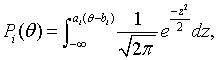 |
(1) |
where
Pi(θ) is the probability of a randomly chosen examinee at ability level θ answering item i correctly,
ai is the discrimination parameter of item i,
bi is the difficulty parameter of item i, and
z is a standardized score of the examinee involving trait score, and the two item parameters.
One-Parameter Logistic Model (1PLM – a.k.a. Rasch Model)
A mathematician in Denmark, George Rasch, came up with a different approach to IRT in the 1950s (see, Rasch, 1960). He used a logistic function to derive an ICC instead of the normal ogive function (though at the time he expressed his model differently), and his model contributed to simplifying the normal ogive model and the complexity of computation, though at the time, he appeared to be unaware of the earlier work on the topic of item response theory. In the Rasch model, the probability of a randomly chosen examinee at an ability level θ obtaining a correct answer on item i can be expressed as
|
|
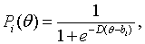 |
(2) |
where e is an exponential constant whose value is about 2.718, and D is a scaling factor whose value is 1.7. The choice of this value for D, produces near equivalent values and interpretations between the item parameters in the normal ogive and two-parameter logistic models. Today, it is common to simply set D=1.0 (default in WinGen) since the normal ogive model is rarely used in practice and so preserving consistent of interpretations between the models is not important. But it is important to know when either studying item parameter estimates or generating them, that the value of D in the model be considered. It is still common, especially with the two and three parameter logistic models to retain D in the model with a value of 1.7. When D=1.0 (it is common to say that the model parameters are placed on what is referred to as the “logistic metric”) and with D=1.7 (it is common to say that the model parameters are placed on what is referred to as the “normal metric”.)
Two-Parameter Logistic Model (2PLM)
Two-parameter logistic model (2PLM) is a generalization of the 1PLM. Instead of having a fixed discrimination of ‘1’ across all items as in 1PLM, in the 2PLM, each item has its own discrimination parameter. Thus, the model is mathematically expressed as
|
|
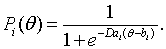 |
(3) |
Three-Parameter Logistic Model (3PLM)
The three-parameter logistic model (3PLM) allows an ICC to have non-zero lower asymptotes. This model is more suitable for response data with those items in which examinees at the extremely low proficiency level may get the items correctly by chance; for example, a multiple choice item. In this model
|
|
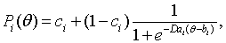 |
(4) |
where ci represents the probability that examinees at extremely low levels of the trait answer item i correctly. This third item parameter, ci, is often called either the pseudo-chance-level parameter or the guessing parameter, although ‘pseudo-chance-level parameter’ is theoretically more appropriate (Hambleton, Swaminathan, & Rogers, 1991). The 2PLM is a special case of 3PLM when c=0, and 1PLM is a special case of 2PLM when a=1.
Nonparametric Item Response Model
ICCs are always characterized by a single function in IRT models with parameters. However, assuming a single function for ICCs may not be appropriate to represent response data in some cases. Nonparametric item response models, in which a variety of shapes of ICCs are allowed, were developed in 1950s, even before parametric item response models were introduced.
Ramsay (1991) proposed a kernel smoothing approach for nonparametric item response models. In a kernel smoothing approach, P(θ) is estimated at g-th evaluation point, qg, by a local averaging procedure. Thus,
|
|
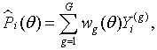 |
(5) |
when
|
|
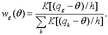 |
(6) |
So,
|
|
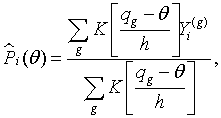 |
(7) |
where
h is the bandwidth parameter, which controls bias and sampling variance, and
K(u) is one of the kernel functions (Ramsay, 1991, p.617):
(a) K(u)=0.5, |u|≤1, and 0 otherwise, for uniform,
(b) K(u)=0.75(1-u2), |u|≤1, and 0 otherwise, for quadratic, and
(c) K(u)=exp(-u2/2) for Gaussian.
Nonparametric item response models may not be as practically useful for operational uses as parametric models because nonparametric item response models do not provide informative, interpretable item parameters (for example, difficulty parameters), and it is hard to equate tests under nonparametric models. However, nonparametric models are frequently used for research purposes such as evaluating model fit for parametric models since nonparametric models produce item characteristic fuctions that are very close to the observed data.
Unidimensional IRT Models for Analyzing Polytomous Responses
In dichotomous item response models, the only type of response data is binary (i.e., 0 or 1). However, in some test situations, responses can be of more than two categories. For example, a questionnaire asking attitude, using Likert-scale items, may result in 5 categorical responses (strongly disagree, disagree, neutral, agree, and strongly agree, which can be coded from 0 to 4). Sometimes polytomous responses are dichotomized to be handled within dichotomous item response models, but it is very inappropriate in most cases because dichotomizing polytomous responses changes the nature of the scale of the measure and, as a result, validity of the measure could be seriously threatened.
Several item response models were developed to enable uses of polytomous responses within an IRT framework. Many of polytomous item response models are basically generalizations of the dichotomous item response models.
Partial Credit Model (PCM)
The partial credit model is an extension of the 1PLM (a.k.a., Rasch model) (Masters; 1982, 1987, 1988a, 1988b). Equation (2) for the 1PLM above can be rewritten as
|
|
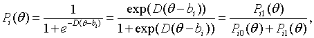 |
(8) |
where Pi1(θ) is the probability of a randomly chosen examinee, whose proficiency level is θ, scoring 1 on item i, and Pi0(θ) is the probability of a randomly chosen examinee, whose proficiency level is θ, scoring 0 on item i. Thus, the probability of a person at θ, scoring x over x-1 can be computed as
|
|
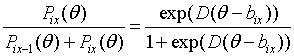 |
(9) |
where Pix(θ) and Pix-1(θ) refer to the probabilities of an examinee at θ, scoring x and x-1, respectively. It should be noted that the number of item difficulty parameters are, now, mi (one less than the number of response categories) in Equation (9). The probability of a randomly chosen examinee, who is at θ, scoring x on item i can be expressed as
|
|
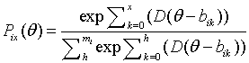 |
(10) |
The function of Equation (10) is often called the score category response function (SCRF).
Generalized Partial Credit Model (GPCM)
The generalized partial credit model (Muraki, 1992) is a generalization of the PCM with a parameter for item discrimination added to the model. Muraki (1992) expressed the model mathematically as following:
|
|
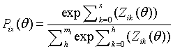 |
(11) |
where
|
|
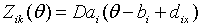 |
(12) |
where dix is the relative difficulty of score category x of item i. Although Muraki (1992) followed the same way of parameterization for item and score category difficulty as Andrich’s (1978) rating scale model, the item difficulty parameters for each score category can be simply rewritten as
|
|
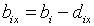 |
(13) |
and so is Equation (12),
|
|
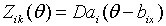 |
(14) |
The only difference between the PCM and GPCM is the additional discrimination parameters for each item (ai). (In WinGen, the parameterization of Equation (14) is used.)
Rating Scale Model (RSM)
There are two different approaches to the rating scale model. Andersen’s (1977, 1983) proposed a response function, in which the values of the category scores are directly used as a part of the function:
|
|
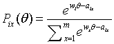 |
(15) |
where w1,w2,…,wm are the category scores, which prescribe how the m response categories are scored, and aih are item parameters connected with the items and categories. An important assumption of this model is that the category scores are equidistant.
Another form of the RSM was proposed by Andrich (1978a, 1978b), which can be seen as a modification of PCM. In Andrich’s RSM, item response functions are computed via
|
|
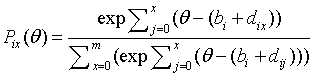 |
(16) |
where dix is the relative difficulty of score category x of item i. Andrich’s RSM assumes that the category scores are fixed across all items in a testlet, and RSM should not be used if the scale of category scores varies across items in a testlet. (In WinGen, Andrich’s RSM (Equation (16)) is used, and d- parameters are renamed to c- in the program interface only for an operational reason.)
Graded Response Model (GRM)
The graded response model was introduced by Samejima (1969, 1972, 1995) to handle ordered polytomous categories such as letter grading, A, B, C, D, and F and polytomous responses to attitudinal statements (such as a Likert scale). The model is expressed as
|
|
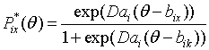 |
(17) |
where P*ix(θ) is the probability of an randomly chosen examinee with proficiency of θ scoring x or above on item i. This function is called the cumulative category response function (CCRF). Probability of each score category can be given by
|
|
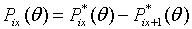 |
(18) |
Thus, the score category response function (SCRF) of the GRM can be expressed as
|
|
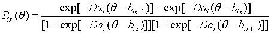 |
(19) |
Unlike the PCM and GPCM, the interpretation of item parameters of the GRM should be based on the CCRF, not on the SCRF. Within the GRM, a value of b-parameter for each response category indicates where a probability that a randomly chosen examinee, whose proficiency level (θ) is exactly same as the value of b-parameter, scores x or higher is 50% on the CCRF.
Although the statistical approaches to category response functions are totally different between the GRM and GPCM (Equation (11)), and so are the interpretation of item parameters, the SCRFs from the two models are usually very close to each other.
Nominal Response Model (NRM)
The nominal response model (also called the Nominal Categories Model) was introduced by Bock (1972). Unlike the other polytomous IRT models introduced above, polytomous responses in NRM are unordered (or at least not assumed to be ordered). Even though responses are often coded numerically (for example, 0,1,2,…,m), the values of the responses do not represent some sort of scores on items, but just nominal indications for response categories. Some applications of the NRM are found in uses with multiple choice items. The category function of NRM can be expressed as
|
|
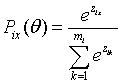 |
(20) |
where
|
|
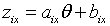 |
(21) |
In Equation (21), aix and bix are called the slope and intercept parameters, respectively, and they are related with item discrimination and location. The sum of a- parameters and the sum of b-parameters across response categories are constrained to be zero.
Multidimensional IRT Model for Dichotomous Responses
Multidimensional Compensatory Three-Parameter Logistic Model (MC3PLM)
Whether it is intended or not, when an item or a set of items measures more than one latent trait, the assumption of unidimensionality is violated. The violation of the unidimensionality assumption may cause a systematic bias in the measurement process even though unidimensional IRT models are known to be somewhat robust against this violation.
Reckase (1985) came up with a multidimensional IRT model which can be seen as an extension of the unidimensional 3PL model:
|
|
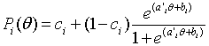 |
(22) |
where
Pi(θ) is the probability of a correct response on test item i for a randomly chosen examinee whose proficiency is θ,
ai is a vector of parameters related to the discriminating power of the test item,
bi is a parameter related to the difficulty of the test item (but, NOT the difficulty itself),
ci is a pseudo-chance level parameter, and
θ is a vector of trait scores for the examinee on the dimensions.
Equation (22) is very similar to the 3PLM (Equation (4)) except the fact that ai and θ are vectors of the parameters for each dimension. A vector of a-parameters in Equation (22) can be tranformed to
|
|
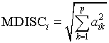 |
(23) |
where MDISCi is the discrimination of the item i for the best combination of abilities and p is the number of dimensions. Also, a value that is equivalent in interpretation to the unidimensional b-parameter can be given by
|
|
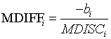 |
(24) |
Last updated:
May 6, 2013
Created by Kyung (Chris) T. Han